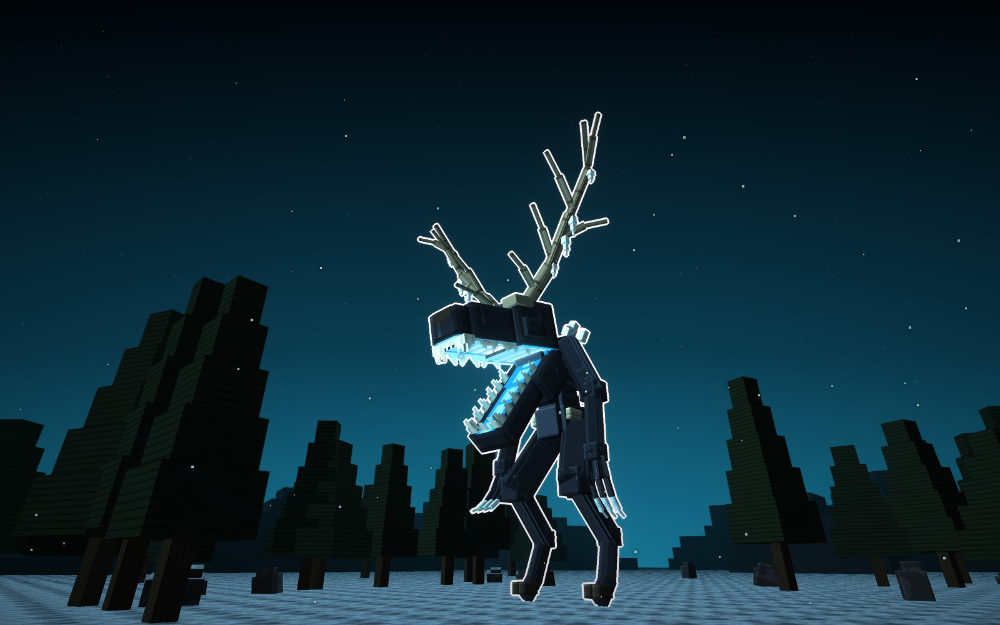
Atalaya · jefe · ficha de diseño · 15-10-2026
Ayunara
Ayunara, la Hambre del Bosque Helado: sale del wendigo de los pueblos del norte, el espíritu del hambre
que vaga por los bosques en invierno y nunca se sacia. Es un monstruo alto, flaco y encorvado, sobre patas de pezuña,
con los brazos largos acabados en garras de hielo y la cabeza coronada por unas astas enormes con carámbanos. Tiene
tres tipos: la Ramosa, la Palmeada y la Retorcida.
Los tres tipos son el mismo jefe y tienen la misma pose: de pie, encorvada hacia delante, con los brazos
colgando y la cabeza adelantada. Cambian las astas y el color.
- Del wendigo le quedan rastros: la flacura, las costillas marcadas, las patas de pezuña, el frío y las astas.
- No es la calavera de ciervo de siempre: la cabeza es nuestra, larga y sin labios, con los dientes siempre a la
vista y las fauces abiertas que arden.
- Las astas le hacen de corona. Ningún otro jefe las tiene. Lo que enmarca la cabeza de los demás (las algas de
Kelpia, las orejas de Zotzara o la mano de Ahuizara) no se repite.
Vive en un bosque de pinos nevado, de noche, con rocas cubiertas de nieve y montes nevados al fondo. Las fotos
van sin letras y con el borde blanco, y cada tipo tiene su cartel.
Cómo es Ayunara
La cabeza
- Es larga y flaca, con una ceja de hueso que tapa los ojos hundidos y encendidos, y los pómulos marcados.
- No tiene labios: los dientes en hoja se ven siempre, de punta a punta.
- Las fauces se abren desde muy atrás: el paladar encendido en escalones, dos colmillos largos arriba y dos abajo,
el suelo de la boca encendido y el núcleo al fondo.
- Las astas le salen de la frente, con carámbanos colgando.
El cuerpo
- El tronco tiene la cintura muy estrecha y el pecho hondo, con las costillas marcadas bajo la piel, el espinazo
y los huesos de la cadera y de los omóplatos.
- La escarcha le crece en los hombros, en cristales.
- Los brazos son largos y flacos, le cuelgan abiertos hasta las rodillas y acaban en tres dedos con garras de
hielo.
- Las patas tienen la rodilla adelante y el corvejón atrás, y acaban en pezuñas partidas.
- Solo arden las fauces y los ojos.
Los tres tipos
Los tres comparten la cabeza, el cuerpo y la pose. Cambian las astas, y con ellas la silueta, además del
color.
A · la Ramosa · hielo
La Ramosa
Astas de muchas puntas, que suben y se abren como las de un ciervo viejo, con carámbanos en las ramas. La
luz es azul hielo.
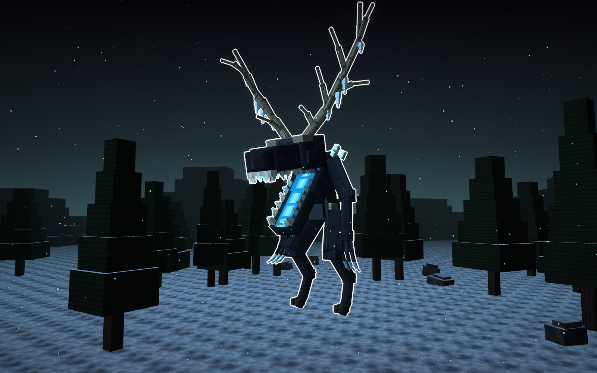
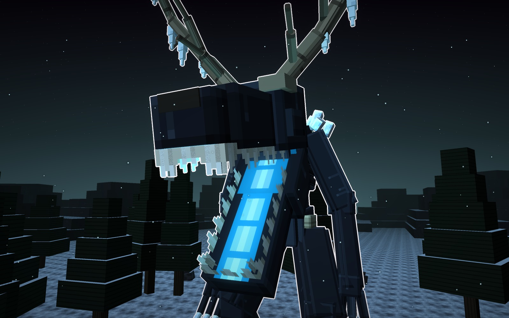
Su forma
- Astas
- de muchas puntas
- Silueta
- alta, en abanico
- Luz
- hielo
Señas
- La que se queda quieta entre los pinos.
- Mide 40 bloques de alto y 27 de ancho con las astas.
piel
asta
hielo
luz
B · la Palmeada · sangre
La Palmeada
Astas anchas en pala, con púas por el borde y una punta corta hacia la frente, como las del alce. Son la
corona más ancha. La luz es rojo sangre.
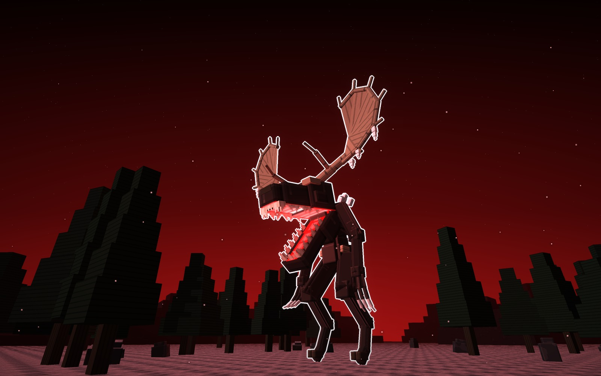
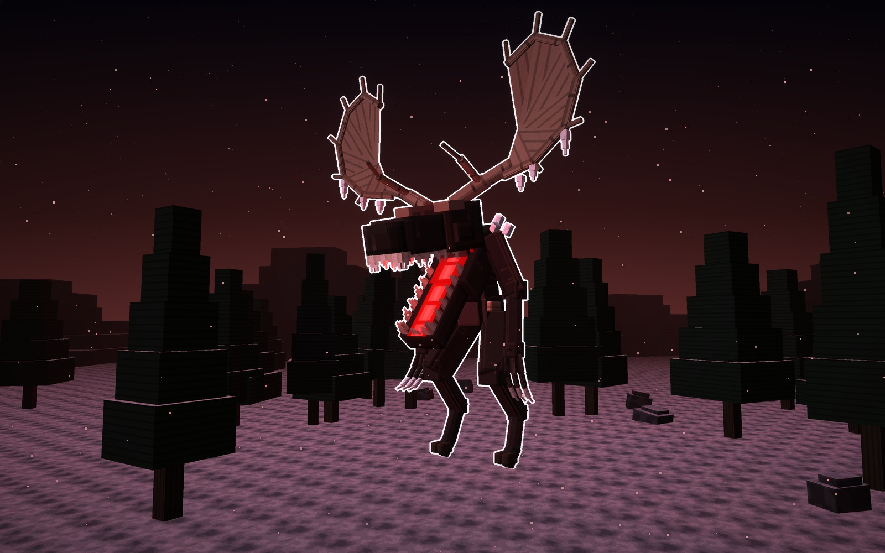
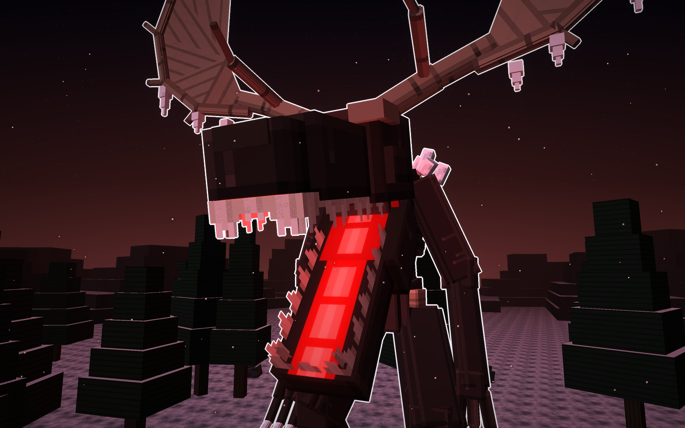
Su forma
- Astas
- en pala, con púas
- Silueta
- ancha
- Luz
- sangre
Señas
- La que embiste con las astas.
- La más ancha: 31 bloques, y 40 de alto.
piel
asta
hielo
luz
C · la Retorcida · violeta
La Retorcida
Astas que se retuercen hacia arriba como raíces secas, con ramitas de punta. Es la silueta más alta y
estrecha. La luz es violeta.
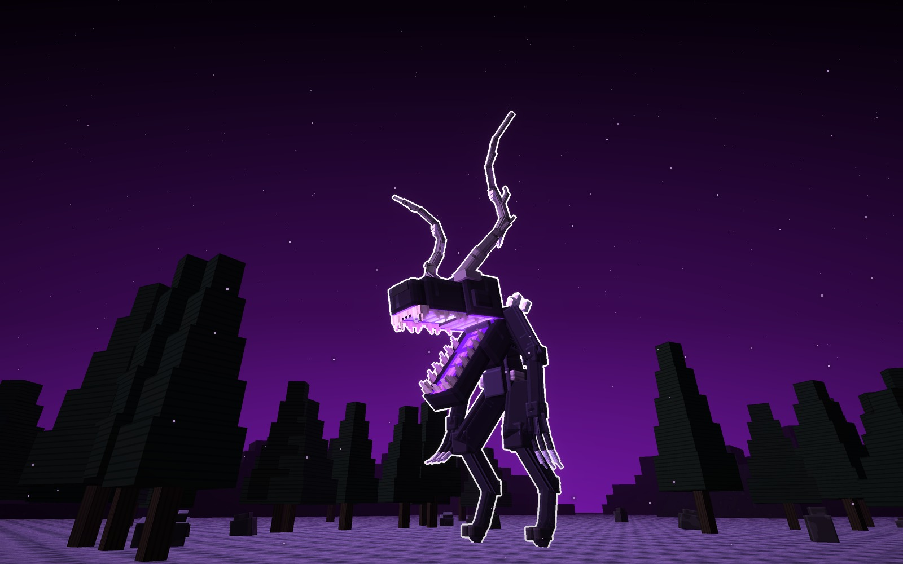
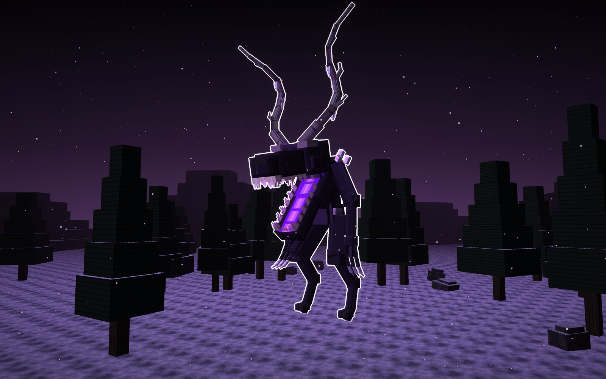
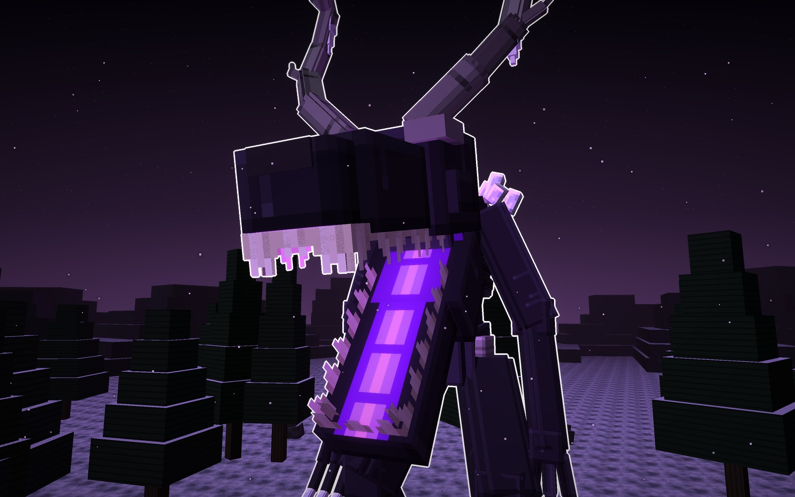
Su forma
- Astas
- retorcidas, como raíces
- Silueta
- alta y estrecha
- Luz
- violeta
Señas
- La más vieja del bosque.
- Mide 40 bloques de alto y 20 de ancho.
piel
asta
hielo
luz
Los tres, a escala
Los tres juntos, con la misma luz y un jugador delante (1,8 bloques).
la Ramosa40 de alto · 27 de ancho
la Palmeada40 de alto · 31 de ancho
la Retorcida40 de alto · 20 de ancho
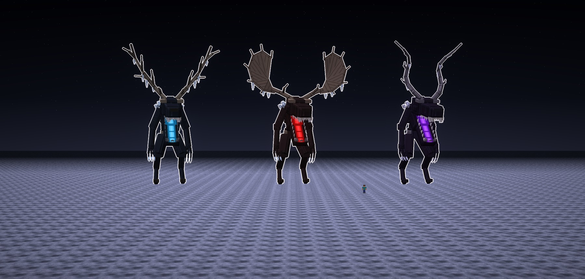
Los materiales
Las texturas de cada tipo a píxel grande, sin letras. Hay una fila por tipo y, de izquierda a derecha, van: la
piel, el asta, la pala, el hielo, el hueso, la pezuña, el ojo, el paladar, los dientes y el núcleo.
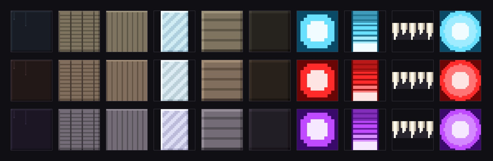
Veredicto de Juan
15-10-2026. Juan la aprobó a la primera, con los tres tipos en la misma pose: «guárdalo, me gustó, y crea otro
boss».
Bocetos: materiales/generadores/ayunara_modelo.py y ayunara_escenas.py (y kelpia_modelo.py y jefa_modelo.py, de
los que toma los pintores comunes y los tubos de bloques).